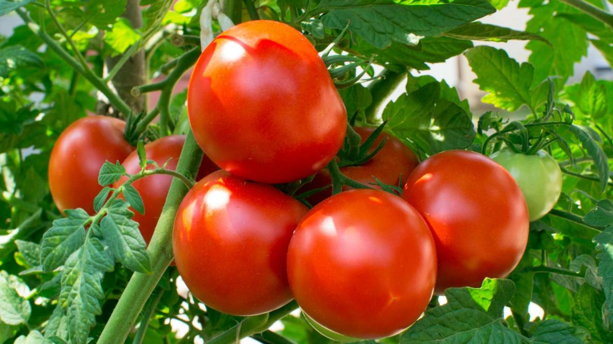
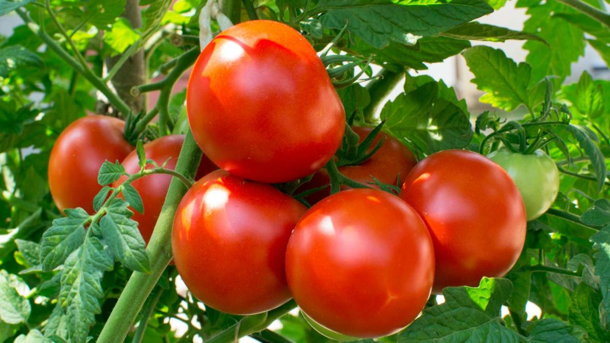

Recipe 1: This source is where I got my recipe from. There are a couple things that I like about it - for example, images that show what different steps look like and different pieces of equipment and that there is a jump to recipe button. However, I don't like that ingredients are shown after a high overview of steps, and I don't like that the images are random and don't show every step.
Recipe 2: I like this recipe because it shows the steps very clearly to the side of the ingredients. I think that the steps could be bigger though. Also, because it is NYT, the color scheme is not very specific to the recipe.
Recipe 3: I like the typography on this site... but little else. I think that the site feels cluttered with ads, and I really dislike the order in which things are presented. There are long tangential descriptions that I feel like distract from the purpose of the website.
Non-Recipe 1:This website is similarly a how-to guide. I feel like the colors and typography are appropriate, but that's pretty much it. It is extremely cluttered with ads, it doesn't show relevant pictures, and it is highly distracted from its main goals.
Non-Recipe 2: I think that Wiki How is a good example of clear step - by -step instructions with images. It uses graphics pretty perfectly to show how to execute a task. The design otherwise is fairly simple and bland, but its intentions are clear.
Non-Recipe 3:Our class website! I think this website is a good example because its goal is to communicate larger tasks in concise ways, and often in smaller steps. I really like the hide/show nature of expanding a step when you're on it and hiding others. I think the color scheme and typography would need to be altered, and pictures would need to be included.
Ingredients/Equipment


 
